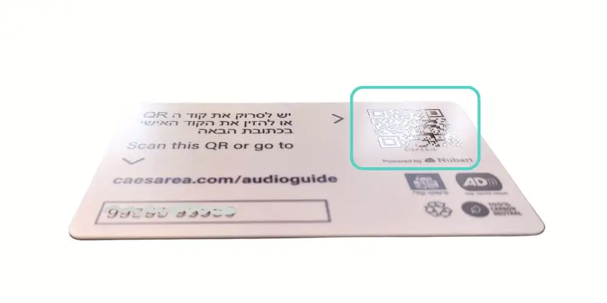

Nubart Team
IT Ontwikkeling
(Artikel geschreven door mensen)
Hoe we Nubart PWA audiogidsen toegankelijk maken
Musea willen plaatsen zijn waar alle burgers van kunnen genieten, ook mensen met fysieke of cognitieve beperkingen. Daarom hebben we er bij Nubart alles aan gedaan om onze digitale audiogidsen voor iedereen toegankelijk te maken. Wij vertellen u hoe.
Toegankelijkheid van digitale audiotours voor slechtzienden
Het streven om bezoeken aan musea voor blinden mogelijk te maken gaat ver terug: in 1913 nodigde John Alfred Charlton Deas, voormalig conservator van het Sunderland Museum, de kinderen van de Sunderland Council Blind School uit om enkele collecties van het Sunderland Museum door hun handen te zien. Het succes van dit initiatief moedigde hem aan om dit soort bezoeken uit te breiden naar blinde volwassenen.
In een museum hangt toegankelijkheid voor blinden niet alleen af van audiogidsen. Braille-etikettering en tactiele aanraakpunten die het object weergeven en zichtbaar maken met de vingertoppen zijn een fundamenteel element voor inclusie.
Audiogidsen spelen echter een belangrijke rol in het toevoegen van waarde aan het bezoek van iemand met een visuele beperking, door een beroep te doen op het gehoor in plaats van het zicht. Als het museum geen tactiele stations heeft, is de audiogids voor deze bezoekers waarschijnlijk de enige informatiebron over het tentoongestelde werk.
Een toegankelijk CMS programmeren
Moderne smartphones worden standaard geleverd met zeer nuttige toepassingen voor slechtzienden: TalkBack voor Android en VoiceOver voor iPhones. Dit zijn schermlezers op basis van gebaren waarmee u een beschrijving van alles op de mobiele telefoon kunt horen, van het batterijniveau tot de naam van de beller. Er is een consensus dat VoiceOver beter is dan TalkBack, dus iPhones worden door slechtzienden momenteel meer gebruikt dan Android.
Nubart audiogidsen maken geen gebruik van apps, maar openen rechtstreeks in de browser van de mobiele telefoon van de bezoeker. Technisch gezien zijn ze een PWA ('Progressive Web-App'). Om ervoor te zorgen dat ze kunnen communiceren met TalkBack of VoiceOver, heeft ons IT-team het CMS dat de digitale inhoud organiseert geprogrammeerd in universeel ontwerp. Hierdoor is de interface van onze audiogidsen zeer geschikt voor gebruik door gebruikers met een visuele beperking. Hiervoor zijn de nodige labels gebruikt, zodat de kunstmatige stem de gebruiker correct kan aangeven waar elke interface voor dient en welke acties worden geactiveerd door erop te klikken.
We hebben dit werk voltooid door verschillende tests met slechtzienden uit te voeren, om zo de inclusiviteit van onze audiogidsen te testen en te valideren.
Vingerdetecteerbare QR-code
PWA-audiogidsen zijn meestal toegankelijk via een QR-code, dus was het belangrijk om de toegankelijkheid van deze codes aan te pakken. Een slechtziende kan prima een QR-code scannen met zijn mobiele camera, zolang hij maar weet waar hij zich bevindt en naar de aangegeven locatie kan wijzen.
Het Oostenrijkse parlement heeft dit probleem bijvoorbeeld opgelost door verschillende QR-codes in reliëf op de muren te plaatsen naast elk punt van belang, zodat ze door aanraking gelokaliseerd kunnen worden.
Volgens hetzelfde principe zijn de QR-codes op de Nubart audiogidskaarten ook gedrukt met een licht reliëf, zodat slechtziende bezoekers ze met hun vingertoppen kunnen herkennen. Aangezien de bezoeker de kaart in de hand heeft, en één enkele QR-code naar de volledige inhoud leidt, is de toegang tot de audiogids bijzonder eenvoudig en onopvallend.
Audiobeschrijvingen van de tentoonstellingen
In een echt toegankelijke audiogids is het nodig om een track op te nemen met de audiobeschrijving van de tentoonstelling, waardoor mensen met een visuele beperking zich het object kunnen voorstellen voordat ze naar de conventionele uitleg van de audiogids luisteren.
In Nubart is "audiobeschrijving" gemakkelijk toegankelijk vanuit het taalmenu.
Toegankelijkheid van video's op museumschermen
Het principe van audiodescriptie voor blinden geldt ook voor video's: een echt toegankelijk museum zal een soundtrack bieden die de actie op de schermen beschrijft.
Dit kan een probleem zijn omdat video's meestal maar één audio-uitgang hebben. Als een museum een video in meerdere talen wil aanbieden, inclusief audiodescriptie, moet het meestal voor elke taal een hoofdtelefoon beschikbaar stellen. Niet alleen vormen koptelefoons voor openbaar gebruik een hygiëneprobleem, maar het kan voor een slechtziende ook moeilijk zijn om te bepalen welke koptelefoon de audiobeschrijving bevat.
Nubart heeft hiervoor een innovatieve technologie gepatenteerd, Nubart Sync.
Nubart Sync maakt het mogelijk om een video te koppelen aan een perfect gesynchroniseerde soundtrack in elke taal, inclusief audiobeschrijvingen voor blinden of speciale taaltracks voor mensen met cognitieve beperkingen. Nubart Sync verschilt van andere complexere en duurdere technologieën doordat de soundtrack alleen via het internet met de video gesynchroniseerd wordt.
Toegankelijkheid van kaarten en geolocatie
Navigeren op een kaart voor slechtzienden is een behoorlijk complexe uitdaging. Momenteel zijn onze interactieve kaarten uitgerust met ARIA-labels waarmee slechtziende bezoekers interessante punten op onze kaarten kunnen vinden. Onze zogenaamde geo-scrollingfunctie maakt het ook mogelijk om automatisch audiotracks te activeren wanneer de gebruiker een bepaald interessant punt nadert.
Op verzoek kunnen we kaarttranscripties integreren die in de schermlezer van de telefoon kunnen worden ingevoerd. Deze transcripties geven een tekstueel overzicht van wat er op dat moment wordt weergegeven en kunnen worden bijgewerkt op basis van zoom/pan.
Toegankelijkheid voor doven en slechthorenden
Over het algemeen is het aanbieden van geluid in een museum via een smartphone een veel betere optie voor doven en slechthorenden dan bijvoorbeeld het projecteren van geluid met een luidspreker in de ruimte of het aanbieden van audiogidstoestellen die niet ingeschakeld zijn. Dat komt omdat tegenwoordig bijna elke slechthorende bezoeker al een smartphone heeft die compatibel is met een gehoorapparaat (M3 of M4 classificatie) of met een audio-inductielus ( T3 of T4 classificatie).
Er zijn twee manieren om inhoud toegankelijk te maken voor slechthorenden: gebarentegidsen (videosporen in gebarentaal) of tekstuele transcripties. Beide opties hebben hun voor- en nadelen. Idealiter zouden zowel gebarentaal als transcripties geïmplementeerd moeten worden om maximale toegankelijkheid voor slechthorenden te garanderen.
Signogidsen
Als u een gebarentolk kiest, voegt Nubart deze optie toe aan het taalmenu: Video's gemaakt door een professionele gebarentolk vervangen de audiotracks.
Probleem van signogidsen:
Gebarentalen verschillen, zowel in lexicon (set van tekens of gebaren) als in grammatica: Spaanse gebarentaal is bijvoorbeeld niet hetzelfde als Engels. Er zijn zelfs verschillen tussen Brits en Amerikaans Engels. De Britten gebruiken het bimanuele alfabet, waarbij ze met beide handen communiceren, terwijl Amerikanen slechts één hand gebruiken. Hoewel er een Internationaal Gebarensysteem (ISS) bestaat, is dit niet nauwkeurig genoeg om een betrouwbare vertaling van de tekst te geven. Het wordt daarom aanbevolen om twee gebarengidsen te gebruiken: één in de hoofdtaal van de audiogids en één in de Internationale Gebarentaal.
De opname van gebarentegidsen zal niet alle slechthorende bezoekers toegankelijkheid bieden: van de 360 miljoen mensen met gehoorverlies in de wereld volgens de WHO, gebruiken slechts ongeveer 70 miljoen gebarentaal als hun eerste taal of moedertaal.
De productie van signogidsen vereist gespecialiseerde professionals en is duur.
De signoguides worden weergegeven in videoformaat. Omdat het erg grote bestanden zijn, is het vaak niet haalbaar om ze vooraf in offline modus te laden op plaatsen met slecht bereik. Als het museum echter overal Wifi heeft of goede mobiele datadekking, kunnen ze prima werken in streaming.
Transcripties: een eenvoudige aanvulling of alternatief
Nubart biedt toegang tot de transcriptie van de audiogidstekst via een knop naast elke track die een overlay-venster met de tekst opent. Deze optie is perfect compatibel met offline voorladen in het geval dat het museum problemen heeft met het internetbereik.
Transcripties zijn misschien wel de goedkoopste toegankelijkheidsoptie om te implementeren. Ze zijn echter lang niet de oplossing voor alle toegankelijkheidsproblemen voor slechthorenden.
Problemen met tekst voor slechthorendenn:
- Prelinguaal slechthorenden (diegenen die hun gehoor verliezen voordat ze taal verwerven) vinden het erg moeilijk om te leren lezen en schrijven. Hoewel ze letters kunnen leren kopiëren en ze kunnen identificeren met afbeeldingen, kunnen ze de spelling van letters niet associëren met de geluidselementen van spraak. Daarom kunnen niet alle slechthorenden vloeiend lezen en zal de integratie van transcriptie niet aan de behoeften van de hele groep voldoen.
De video's van tekst voorzien
Net als bij het transcriberen van audiotracks, helpt ondertiteling slechthorende kijkers om de audio-informatie in een video te begrijpen.
Hier is een video die de toepassingen van Nubart voor toegankelijkheid samenvat:
Wat uw situatie ook is, vraag het ons. Bij Nubart analyseren we uw zaak en geven we u een offerte passend bij uw behoeften